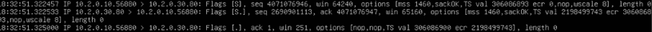
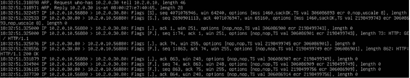

Objective: In this we are going to create a DHCP server, setup a web server and learn related things.
For this we are not going to create another virtual machine. Rather we would use the router because in most setups router and dhcp are configured in same machine. But for the purpose of web server, we create another machine.
Table Of Contents
The Problem
In our current setup, if we create new virtual machine then we have to manually create netplan config and add things ourselves. Now imagine, if in our setup we have 10 new machines joining, then we would have to assign the config manually to each of them.
Now you would have started to see why that is a problem. In a big infrastructure, this would be nothing sort of a nightmare.
The Solution: DHCP
The solution is to have a service that would provide these configurations to the machines which join our network.The service responsible for this is called DHCP which stands for Dynamic Host Configuration protocol.
The mechanism, thought complicated, is simple in its spirit. The new machine sends requests to the broadcast (255.255.255.255 ), the DHCP server see those request and replies with the config. ( we will see dora later in action )
DORA
The DORA protocol is the standard 4-step process used by DHCP (Dynamic Host Configuration Protocol) to automatically assign IP addresses and other network settings to devices.
-
Discover (D):
When a device connects to a network, it doesn't have an IP.It sends a DHCP Discover message as a broadcast because it does not know where the DHCP server is. The purpose of this is to find if there any DHCP server available.
Source IP: 0.0.0.0
Destination IP: 255.255.255.255 (broadcast) -
Offer (O):
One or more DHCP server respond with a DHCP Offer. The offer contains an available IP addr, subnet mask, default gateway, dns server(s), lease duration.
-
Request (R):
The client chooses one of the offers (usually the first one). Then it sends a DHCP Request message, typically as broadcast. This tell all DHCP servers which offer it has accepted.
-
Acknowledge (A):
The selected DHCP server sends a DHCP ACK. This confirms the lease and provides the final configuration details. The client configures its network interface with assigned details.
Setting up Web Server
This is fairly simple. Create a new VM and install nginx on it.
$ sudo apt install nginx
$ sudo systemctl start nginx
On most linux configurations, this would automatically serve a welcome page on localhost.
$ curl http://localhost
<!DOCTYPE html>
<html>
<head>
<title>Welcome to nginx!</title>
...
Bonus: Seeing the requests fly
To do so we will use tcpdump to observe requests on the webserver.
$ sudo tcpdump -nn
The first thing to observe would be the ARP requests. Every machine constantly updates its ARP cache.
18:32:51.318898 ARP, Request who-has 10.2.0.30 tell 10.2.0.10, lenght 46
18:32:51.322457 ARP, Reply 10.2.0.30 is-at 08:00:27:e7:40:65, lenght 28
Here 10.2.0.10 is the machine requesting the website and 10.2.0.30 is the machine hosting the website. One thing to notice is that the reply to ARP request is a mac address. This is because ARP operates at layer 2 and keeps track of mac addresses.
Now once the user knows the web-server. It would perfrom a three step handshake with it to establish a TCP connection which is a layer 3 protocol. Another layer 3 protocol is UDP but it just sends the data without any thought to whether the data would be recived at other end. Whereas TCP performs a handshake and establishes a connection where no packet is dropped.

If it is not visible then heres a detailed explanation (better image below):
-
10.2.0.10:56880 → 10.2.0.30:80 Flags [S]
This is SYN packet, the first of three. This is sent by the client to start a TCP connection
-
10.2.0.30:80 → 10.2.0.10:56880 Flags [S.]
This is SYN-ACK packet, the second of three. This is sent by the server as an reply to the SYN packet.
-
10.2.0.10:56880 → 10.2.0.30:80 Flags [.] ack 1
This is ACK packet, the third of three. This is the final packet sent by the client which marks the end of handshake, marking it as complete and the connection is established.
After this the client requests a web page by making a GET request which gets acknowledged by the web-server
10.2.0.10.56880 > 10.2.0.30.80: Flags [P.], length 73: HTTP: GET / HTTP/1.1
10.2.0.30.80 > 10.2.0.10.56880: Flags [.], ack, length 0
Now the server sends the webpage as an response to the GET request which gets acknowledged by the client
10.2.0.30.80 > 10.2.0.10.56880: Flags [P.], length 862: HTTP: HTTP/1.1 200 OK
10.2.0.10.56880 > 10.2.0.30.80: Flags [.], ack length 0
Since the data is transferred, we shall close the connection.
10.2.0.10.56880 > 10.2.0.30.80: Flags [F.], length 0
10.2.0.30.80 > 10.2.0.10.56880: Flags [F.], length 0
10.2.0.10.56880 > 10.2.0.30.80: Flags [.], ack 864, length 0

Complete output in text:
18:32:51.316898 ARP, Request who-has 10.2.0.30 tell 10.2.0.10, length 46
18:32:51.318971 ARP, Reply 10.2.0.30 is-at 08:00:27:e7:40:65, length 28
18:32:51.322457 IP 10.2.0.10.56880 > 10.2.0.30.80: Flags [S], seq 4071076946, win 64240, options [mss 1460,sackOK,TS val 306086893 ecr 0,nop,wscale 8], length 0
18:32:51.322533 IP 10.2.0.30.80 > 10.2.0.10.56880: Flags [S.], seq 2690901113, ack 4071076947, win 65160, options [mss 1460,sackOK,TS val 2198499743 ecr 306086893,nop,wscale 8], length 0
18:32:51.325000 IP 10.2.0.10.56880 > 10.2.0.30.80: Flags [.], ack 1, win 251, options [nop,nop,TS val 306086900 ecr 2198499743], length 0
18:32:51.325000 IP 10.2.0.10.56880 > 10.2.0.30.80: Flags [P.], seq 1:74, ack 1, win 251, options [nop,nop,TS val 306086901 ecr 2198499743], length 73: HTTP: GET / HTTP/1.1
18:32:51.325076 IP 10.2.0.30.80 > 10.2.0.10.56880: Flags [.], ack 74, win 255, options [nop,nop,TS val 2198499745 ecr 306086901], length 0
18:32:51.328556 IP 10.2.0.30.80 > 10.2.0.10.56880: Flags [P.], seq 1:863, ack 74, win 255, options [nop,nop,TS val 2198499749 ecr 306086901], length 862: HTTP: HTTP/1.1 200 OK
18:32:51.331879 IP 10.2.0.10.56880 > 10.2.0.30.80: Flags [.], ack 863, win 248, options [nop,nop,TS val 306086907 ecr 2198499749], length 0
18:32:51.334904 IP 10.2.0.10.56880 > 10.2.0.30.80: Flags [F.], seq 74, ack 863, win 248, options [nop,nop,TS val 306086909 ecr 2198499749], length 0
18:32:51.336115 IP 10.2.0.30.80 > 10.2.0.10.56880: Flags [F.], seq 863, ack 75, win 255, options [nop,nop,TS val 2198499756 ecr 306086909], length 0
18:32:51.337730 IP 10.2.0.10.56880 > 10.2.0.30.80: Flags [.], ack 864, win 248, options [nop,nop,TS val 306086914 ecr 2198499756], length 0
Conclusion
In this article, we learnt about DHCP, setUP a DHCP server, a web server, understood every basic thing related to them. And this marks the end of our phase 1 where we built a mini datacenter for our cloud platform. We shall scale this to great heights in upcoming articles.